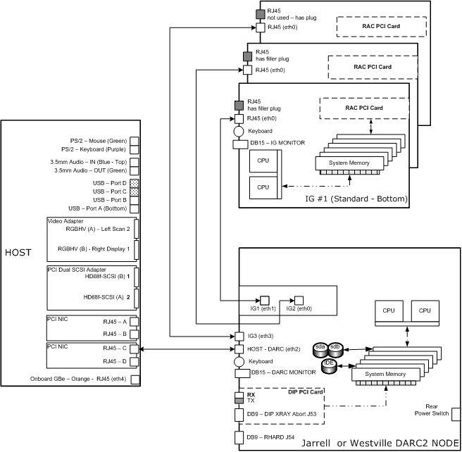
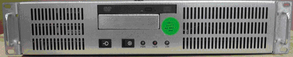
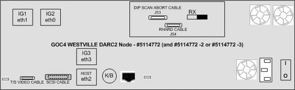
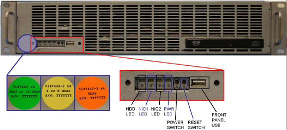
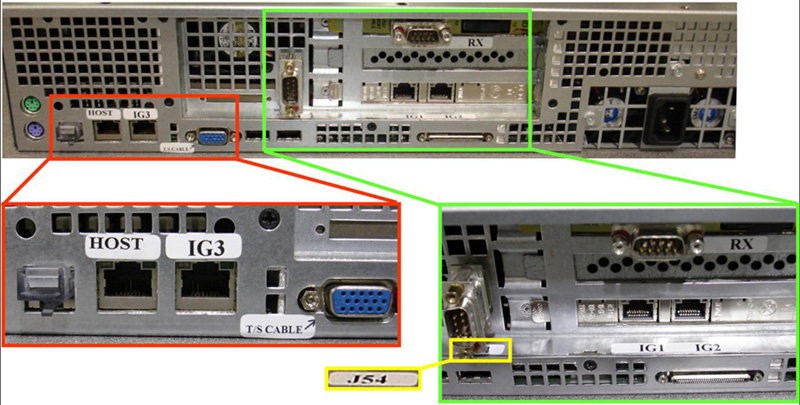
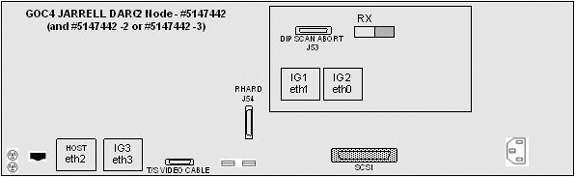
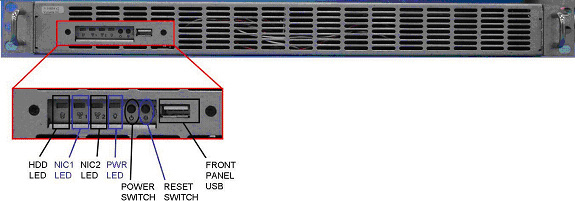

| NOTE: | A Jarrell version of the DARC2 Node will be a valid replacement part for GOC4 Operator Consoles in the future. |
Illustration 1: Generic Ethernet Cabling Diagram

Illustration 2: ”Westville” DARC2 Node #5114772 (and -2 or -3)
(Sheet 1 of 2

(Sheet 2 of 2

Illustration 3: “Jarrell” DARC2 Node #5147442 (and -2 or -3)
(Sheet 1 of 3

(Sheet 2 of 3

(Sheet 3 of 3

Illustration 4: “Westville” IG Node #2362872
(Sheet 1 of 2
(Sheet 2 of 2
Illustration 5: ”Jarrell” IG Node #5147443
(Sheet 1 of 2

(Sheet 2 of 2